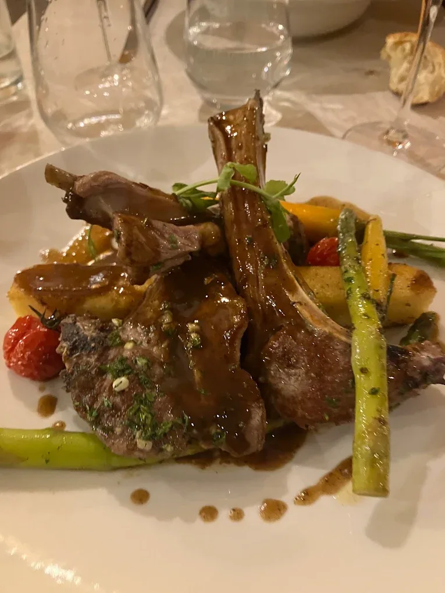
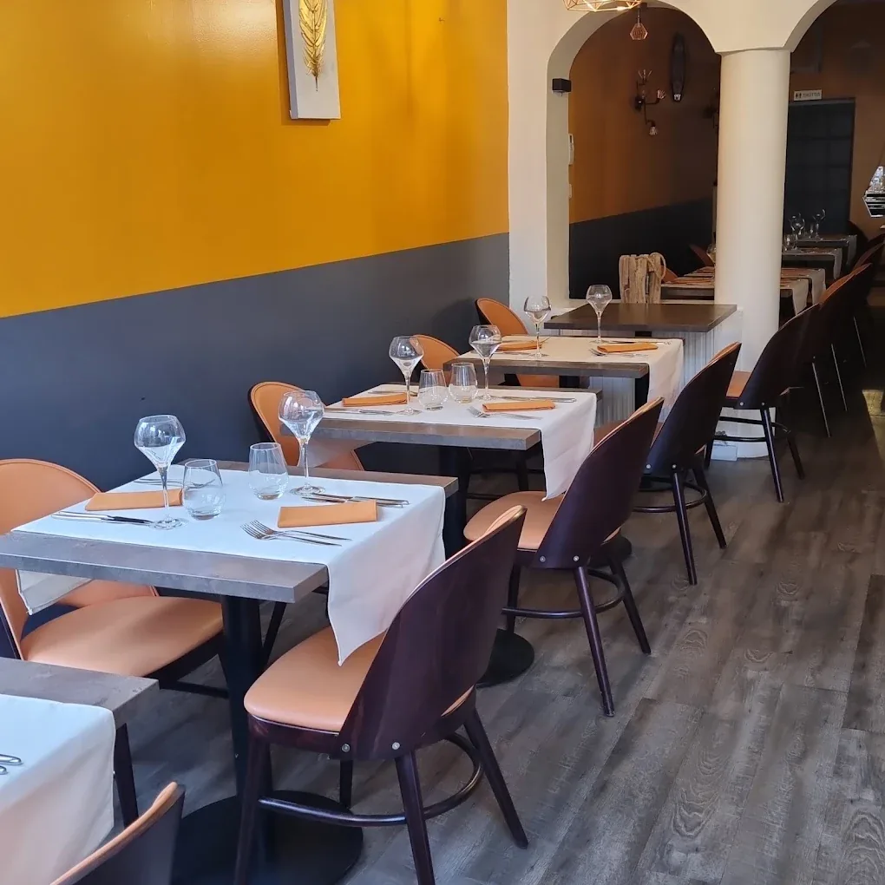
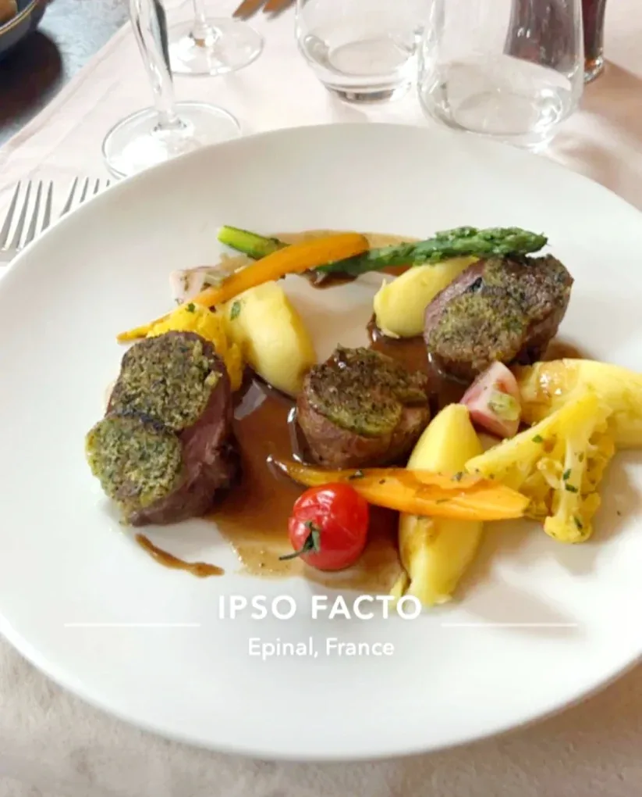
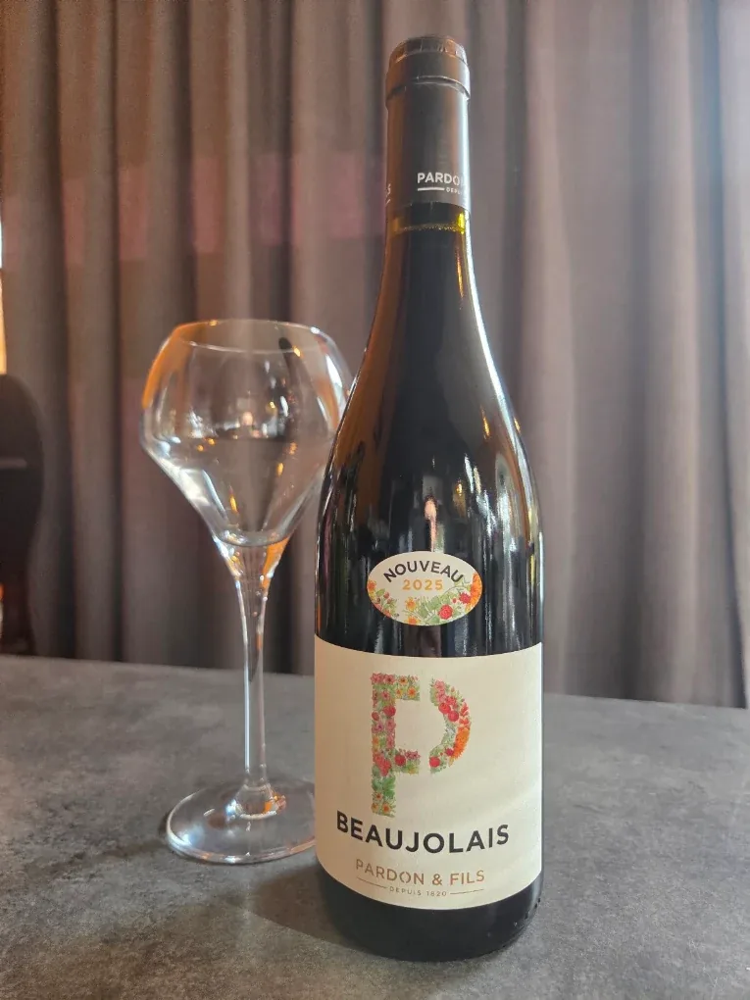
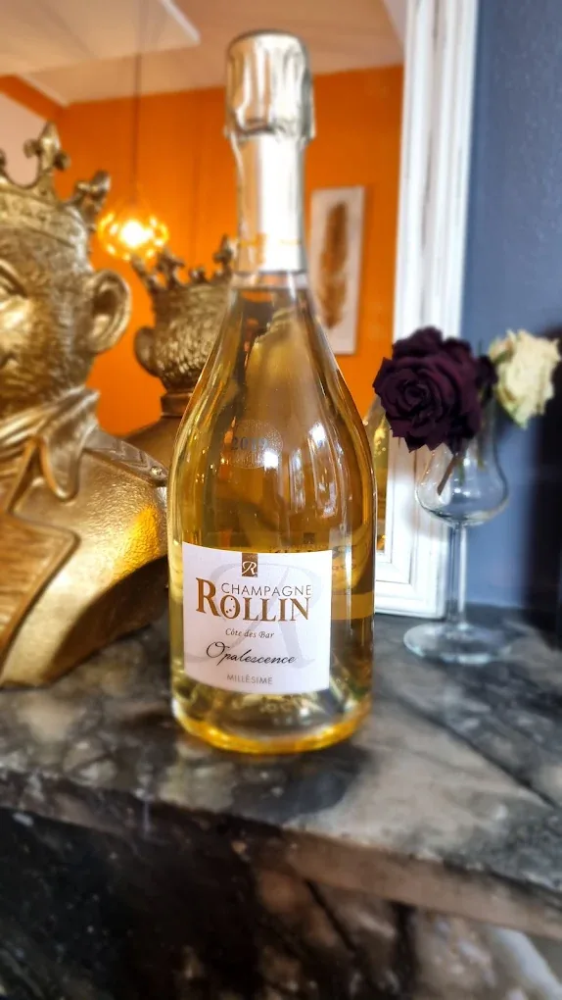
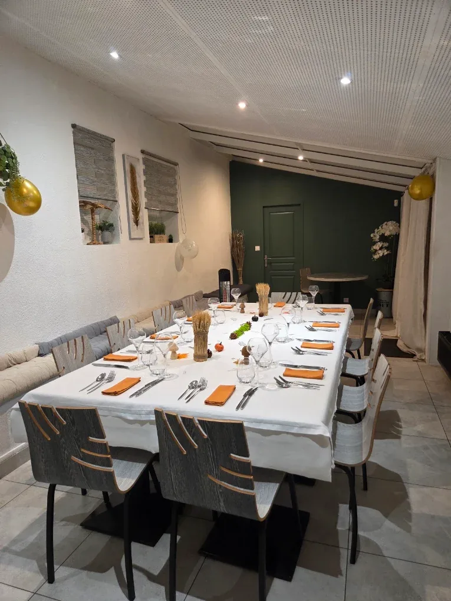
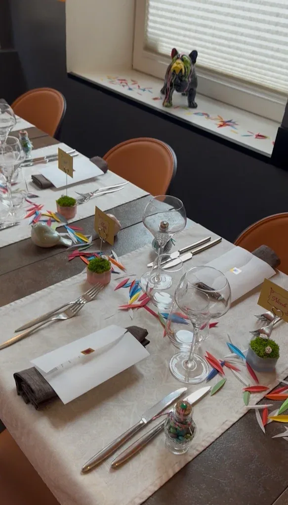
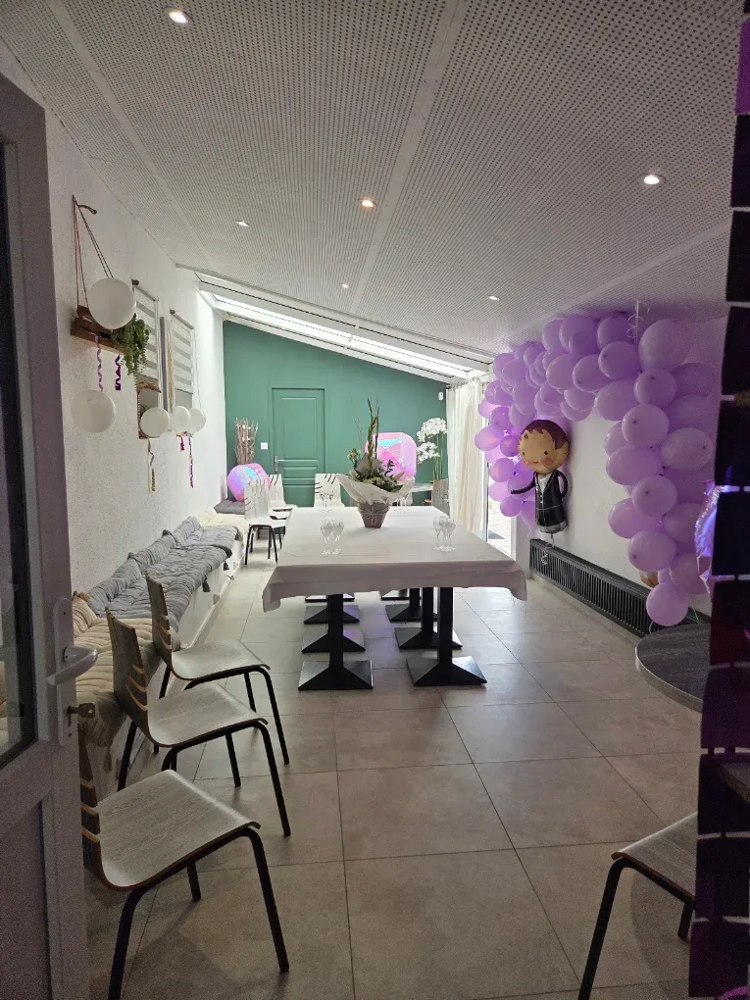

Signature
Cassolette de rognons & ris de veau aux morilles
Purée 50/50 ou frites maison. Le plat qui a fait la maison, généreux et canaille.
29 €Bienvenue à Épinal
Cuisine française de saison, produits frais et sauces travaillées, au cœur de la Cité des Images.
L'esprit de la maison
Chez Ipso Facto, tout commence par le produit. Le chef Mathias compose une carte qui change à chaque saison, au gré du marché et des récoltes de nos producteurs voisins.
Sa signature : la cuisson basse température, qui révèle le moelleux des viandes et la délicatesse des poissons, et des sauces longuement travaillées — réductions, jus et émulsions qui font le caractère de chaque assiette.
Des cuissons lentes et maîtrisées pour des textures justes.
Le marché dicte la carte, jamais l'inverse.
Des fermes et maisons des Vosges, à quelques kilomètres.
La marque de fabrique du chef Mathias.

La carte
La carte évolue à chaque saison. Voici un aperçu — les plats signature et une sélection du moment.
Télécharger la carte (PDF)
Purée 50/50 ou frites maison. Le plat qui a fait la maison, généreux et canaille.
29 €
Bœuf dans le filet, foie gras poêlé, pommes paille et réduction au Brandy.
29 €35 €
Entrée · plat · dessert au choix. La formule du marché, le midi en semaine.
52 €
Amuse-bouche, entrée, plat, fromages ou dessert, café « Dammann Frères ».
69 €
Le foie gras, entrée, plat, fromages affinés, dessert et café.
12 €
Jusqu'à 12 ans — plat, dessert et une boisson.
Prix nets, service compris. Carte susceptible d'évoluer selon le marché.
La cave
Nous sélectionnons nos vins à la source, au contact des vignerons — pour une cave vivante, sincère, et une belle place faite au bio et à la biodynamie.
De grands crus au verre. Chose rare : un Pauillac ou un Médoc se dégustent aussi au verre — pour s'offrir un grand vin, sans la bouteille entière.


Nos producteurs
L'ancrage local n'est pas un argument, c'est notre manière de travailler. Voici les maisons et les fermes qui nous fournissent.
Xertigny
Œufs fermiers
Saint-Baslemont
Chèvres frais
Les Forges
Rhums & spiritueux
Vosges
Fromages affinés
Vosges
Herbes & aromatiques
Vosges
Vins & cave
Vosges
Bière artisanale
… et le marché,
chaque semaine.
Privatisation · Private room
Notre private room se privatise à partir d'une dizaine de personnes. Repas de famille, dîner d'affaires, anniversaire, jour férié : nous imaginons un moment sur mesure — formule clé en main, décoration comprise. Et l'été, la terrasse vous ouvre ses tables.



Dites-nous tout — nous revenons vers vous rapidement.
Galerie
Infos pratiques
| Lundi | 12h – 14h | Fermé le soir |
|---|---|---|
| Mardi | 12h – 14h | 19h – 23h |
| Mercredi | 12h – 14h | 19h – 23h |
| Jeudi | 12h – 14h | 19h – 23h |
| Vendredi | 12h – 14h | 19h – 23h |
| Samedi | 12h – 14h | 19h – 23h |
| Dimanche | Fermé | |
Fermé le lundi soir et le dimanche — sauf réservation de groupe à partir de 15 personnes.